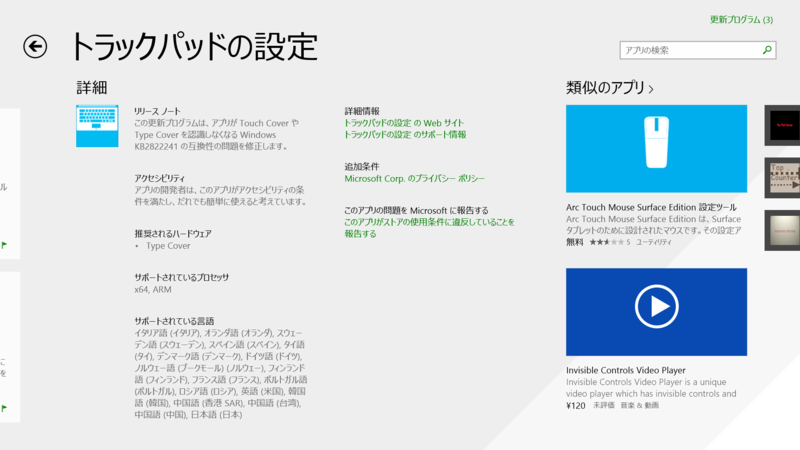

Surface 2、Surface Pro 2、「トラックパッドの設定」のアップデート
公開日：
Surface 2 と Surface Pro 2 にアップデートがきているが……
Surface 2
Microsoft Surface 2 update history | Surface firmware updatesNovember 2013 updates
- Performance improvements for all Type Cover and Touch Cover versions.
- Wi-Fi and Bluetooth driver updates to improve wireless display performance.
- Camera improvements.
- Audio improvements including switching to speaker playback after disconnecting a headset.
- System performance and stability improvements.
- Battery life improvements.
Surface Pro 2
Microsoft Surface Pro update history | Windows Update | Surface Pro updatesNovember 2013 updates
Windows 8.0
- Update to allow the use of Japanese Touch Cover 2 and Type Cover 2.
Windows 8.1
- Update to the LifeCam driver to increase TrueColor fidelity.
- Update to the Wi-Fi and Bluetooth drivers to enable improved wireless display performance and to further enhance Wi-Fi - network performance and stability.
その一方で、

Windows ストア の Windows 用 トラックパッドの設定 アプリ にもアップデートがきている。
この更新プログラムは、アプリが Touch Cover や Type Cover を認識しなくなる Windows KB2822241 の互換性の問題を修正します。
そういえば Surface Pro 1 で Touch Cover/Type Cover が反応しなくなったり、最悪 OS がリブートしてしまう現象を経験していたけれど、これが治るのだろうか。だったらうれしい。
Surface Pro が勝手に落ちて、電源再投入したら、TypeCover が認識されなかった。外してつけた
んー また Surface Pro のキーボード（TouchCover）反応しなくなった。あした TypeCover もってきてちゃんと動いたら、キーボードは修理たのんでみるかな？
「アプリが……認識しなくなる」っていってるから、別件の可能性もあるけれど。ちなみに Surface 2 ではこの問題には遭遇していない。